Module 2:
micro(dj)controller
Artistic Vision
For this project, all we were asked to do was create something with the hardware components we were given: two buttons, a joystick, a potentiometer, and an LED light. Learning about how the potentiometer worked in class really made me understand how DJ controllers worked, which are comprised mostly of potentiometers. Having just started DJing again regularly at my radio show, I wanted to see if I could create an extremely basic sound manipulation tool that resembles a DJ controller, but abstracts away from it as well.
micro(dj)controller, a play on the term 'microcontroller', is inspired by pocket-sized music technology, such as the Hercules Starlight controller, the SYNTH-A-SETTE analog synthesizer, and the iPod mini. All of these devices encourage playful acoustic experimentation and prioritize accessibility for beginners. With this project I wanted to understand what functions matter the most in sound manipulation (in a DJing context), and implement that with the basic components I had available so that users have as much creative freedom as possible with how they decide to use the device.
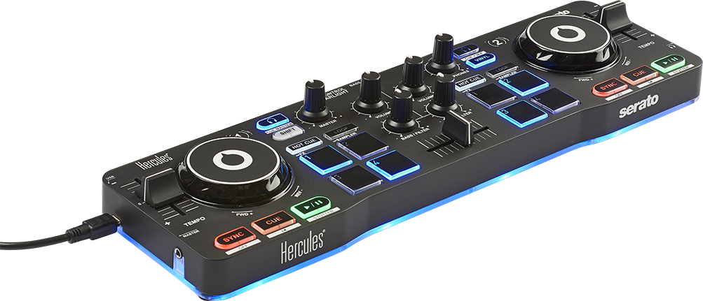
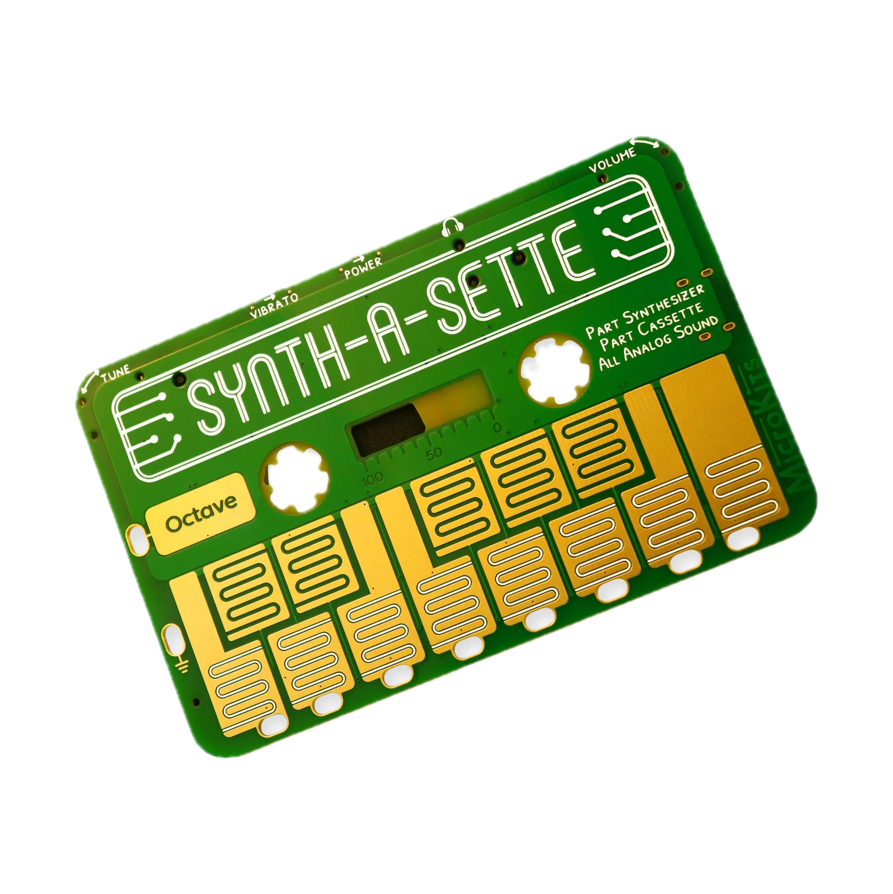
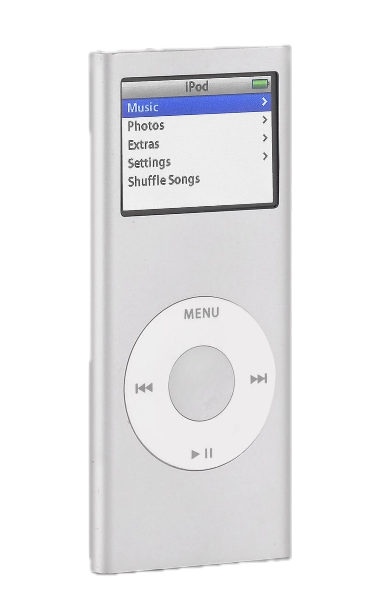
img sources (left to right): Hercules, MoMA Design Store, Retrospekt
Materials
- ESP32
- Breadboard
- Button x2
- Potentiometer
- Joystick
- LED
- 220Ω resistor
- 5 female/male wires
- jumper wires
Process
The earliest and most important design decision I made was which functions I wanted each component to serve. This prompted questions such as what makes a DJ controller a DJ controller, what aspects of sound can be manipulated to make the result sound totally different, and what alterations users would find fun, interesting, and intuitive. Ultimately, I decided on the following system:
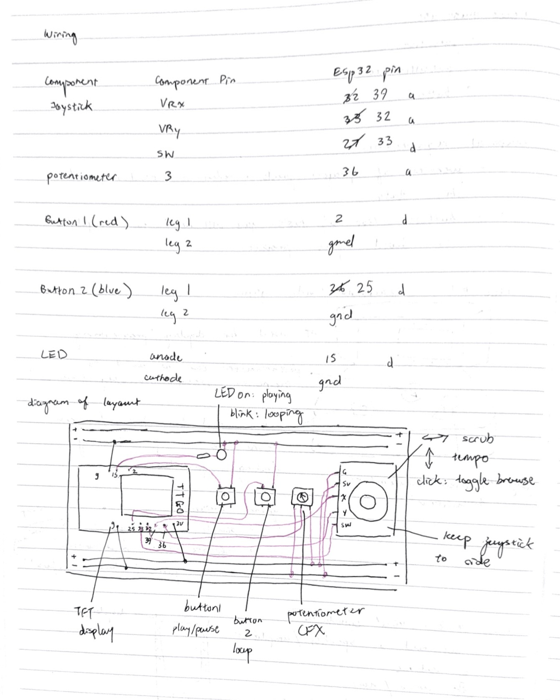
This is the wiring system that felt the most intuitive to me, as this project grew out of the initial idea that all DJ controllers are just many potentiometers with different functions placed on the same deck. Because of this, I decided very early on that the potentiometer would be used for applying a color FX filter. I then decided to assign tempo control and scrubbing functions to the x and y inputs of the joystick, respectively. Initially I had planned to assign tempo control to the y values of the joystick but because I manually attached the joystick to the breadboard using tac at a 90 degree rotation (so tilting it vertically was actually changing the x values, and tilting it horizontally was changing the y values) so that the wires would not overlap with other components of the board (which I had already set down), I had to change the tempo control to be dependent on the x values. Tempo control, scrubbing, and CFX filtering all require a gradual motion of figuring what ‘level’ of change you want to apply, such as how exactly muffled or sharp you want a track to sound when applying a CFX filter, so all of these functions were assigned to analog inputs. The remaining 2 buttons were assigned to playing/pausing a track and creating loops, which don’t require gradual control across a given spectrum. Finally, I needed to utilize the button of the joystick in order to toggle between track selection and mixing mode, as I really wanted to give users the opportunity to try out the functions with a variety of tracks.
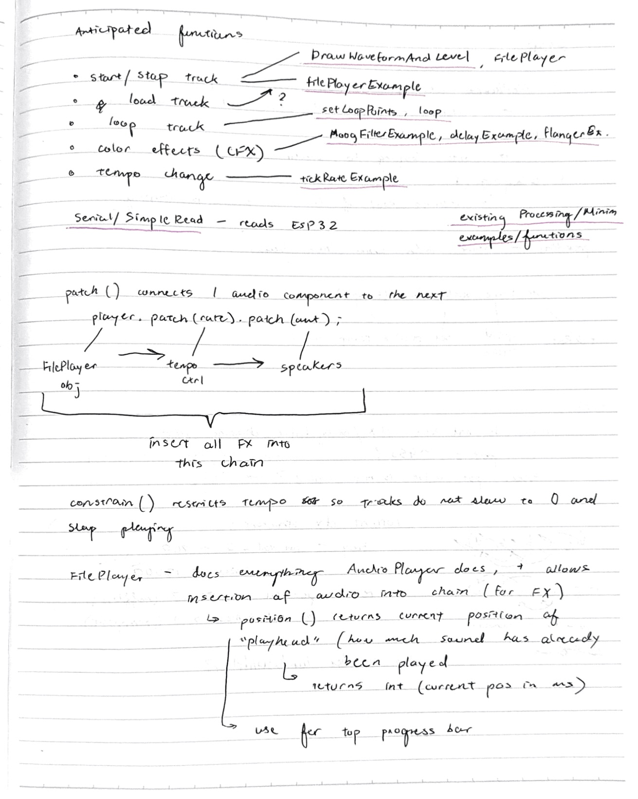
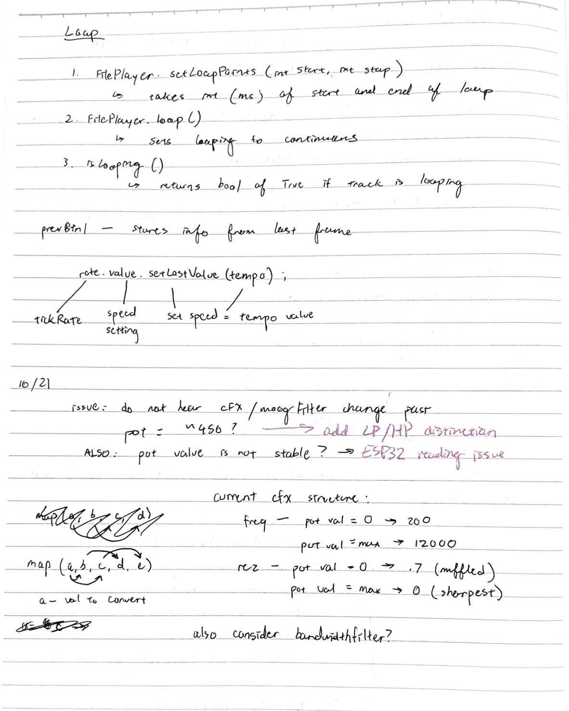
Creating the software for this system was a process of assembling pieces of a jigsaw puzzle that were already available to me. I decided early on to use the Minim audio library, which provides many useful classes and methods for sound-related projects made in Processing. Minim already contains many examples relevant to my project, so most of my sketch consists of already-existing Minim library examples adapted to fit my inputs and my system. From here, I had to identify functions from the Minim library that would be most useful to me, which consisted of skimming the Minim documentation and rapidly testing out example code from the library with my laptop's mouse and keyboard as controls (as opposed to fully implementing it on my hardware components). For each hardware component, I repeated the same process of finding the relevant Minim example code, testing out the example code, adjusting arguments and parameters to match my input, and connecting it to other parts of the system.
Technical Challenges
Adapting the Minim library's example code for functions I intended to use for analog inputs was difficult. I had to use the Arduino serial monitor to understand the full range of values each input was able to send, and change specific parameters in the example code in order to fit the given value range. In other cases, the example code had too many options for customization and was taking too many inputs from either the laptop's native keyboard/mouse, and I needed to find ways to combine these functions into one or decide what to keep and what to leave out. An example of this process is my adaptation of the library's moogFilterExample() function to what would ultimately become my applyCFX(int v) function.
When considering the implementation of the CFX filters, there were three example functions/code files that I anticipated were going to be relevant: moogFilterExample, delayExample, and flangerExample. I was able to quickly find these functions as they share names with a lot of traditional DJ software effects and controller button labels. After running all three programs on my laptop with its native inputs, I decided that the moogFilterExample contained the most of what I wanted to implement as my potentiometer input.
The first issue was that the example code applied the filter to a white noise object, which was created within the program itself. I needed to replace this with my loaded track, which was ultimately simple as I just needed to patch() the effect onto my main audio stream.
The filter is created through altering 2 sound features: frequency and resonance. The example program was able to demonstrate this by the x-y coordinates of the mouse, wherein dragging the mouse upwards and downwards in the window adjusted the sound's resonance, and moving it sideways adjusted the frequency. Both of these adjustments are necessary for the CFX filter, therefore I had to combine them in a way so that they could both be adjusted based on one input value as opposed to two values. Another issue was that the program relied on the user pressing the '1', '2', or '3' keys on the keyboard to switch between the low-pass, high-pass, and band-pass filters. To address this issue I decided to disregard the band-pass filter and apply the low-pass and high-pass filters automatically depending on whether the potentiometer input was above or below the median value. This is what a first pass at adapting the code looked like:
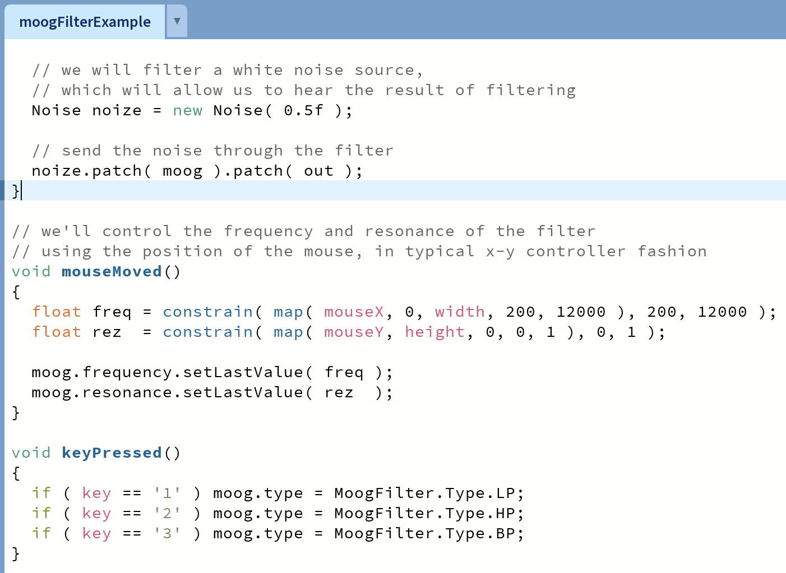
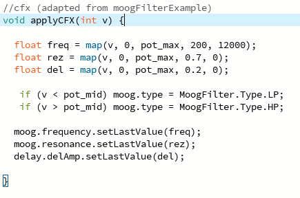
For this first iteration, I changed parameters in order to fit my input value range, and maintained the basic structure of the example code. I also decided to add a delay so that as the potentiometer gets closer to 0 an echo effect is added. Since I want the left end (v=0) to sound muffled and emphasize low-frequency noise and for the right end (v=pot_max) to sound sharp and scratchy, I thought it would make sense for the low-pass filter to automatically apply when the pot value was below the midpoint, and for the high-pass filter to do the same but for above the midpoint.
There were 2 issues when I tested this out: the switch from LP to HP once the potentiometer was past the midpoint was very jarring and not smooth at all, and there was virtually no difference in the filter's intensity from around the midpoint to the potentiometer's max value. To fix the first issue, I decided to rearrange the function so everything revolves on where the potentiometer is relative to its mid value, and that when the potentiometer is around the mid value, no effect is applied at all. I decided on making this 'deadzone' around 150 (above and below the midpoint). I came to this decision by starting from 50, and then gradually increasing until I got to a point where it felt 'natural' based on how far left/right the potentiometer was. Finally, I created 3 conditions depending on whether the potentiometer was in the low-pass zone, deadzone, or high-pass zone, and then, based off of the deadzone having a frequency of 2000 and resonance of 0, and adjusted the value range for the two filters based on what sounded right.
//cfx (adapted from moogFilterExample)
void applyCFX(int v) {
int noFilterBoundary = 150; //at pot_mid +-150 play original sound
float freq;
float rez;
if (v < pot_mid - noFilterBoundary) {
moog.type = MoogFilter.Type.LP; //low-pass condition
freq = map(v, 0, (pot_mid - noFilterBoundary), 200, 20000);
rez = map(v, 0, (pot_mid - noFilterBoundary), 0.7, 0);
} else if (v > pot_mid + noFilterBoundary) {
moog.type = MoogFilter.Type.HP; //high-pass condition
freq = map(v, (pot_mid + noFilterBoundary), pot_max, 20, 4000);
rez = map(v, (pot_mid + noFilterBoundary), pot_max, 0, 0.7);
} else {
moog.type = MoogFilter.Type.LP; //default/normal condition
freq = 2000
rez = 0;
}
float del = map(v, 0, pot_max, 0.1, 0);
moog.frequency.setLastValue(freq);
moog.resonance.setLastValue(rez);
delay.delAmp.setLastValue(del);
}
All other functions adapted from the library's example code followed this process of understanding the example's original inputs, adapting them for my inputs, and adjusting value ranges when applicable based on (lots of) trial and error through rapidly running the sketch and testing out the function via the hardware.
AI Usage
For this project I used Claude Opus 5.5 to assist me with creating an initial user interface and layout which I later edited to include my custom font and color palette. This includes functions such as drawProgressBar, drawHeader, and drawTrackList (all functions initially generated by Claude have been grouped together at the bottom of the sketch with a divider labelled “GENERATED BY CLAUDE”). I also used AI assistance to learn how to make the LED light blink and for debugging purposes.
Example of prompts used for display:
[pasted code adapted from drawWaveForm() example]
“Currently I only have this waveform as my UI. I would like to add the following:
- a header box where I can insert the title of this project
- a progress bar that tells me how far i am into the song (indicate loop points with yellow bars when they have been set)
- a smaller rectangle box for the current waveform
- a tracklist on the right side of the screen that displays the available tracks.
For the progress bar, waveform box, and tracklist, give me a thin border and show me where to change the color of the border as well. Do not add a stroke outline to the header box. Gradually leave more of the code you provide me with empty so I can fill it out myself.”
Prompt used for LED blink:
[pasted arduino code for activating LED light]
“I have programmed the ESP32 to make the LED light up when a track is playing. Can you show me how to make the LED detect when a track is looping, and then blink instead of showing static light? Do not change or delete anything I’ve already written.”
For debugging, I would explain the issue and paste a portion of code if necessary, and ask if it could point me to where the issue might be caused, for example:
“The loop indicator lines are currently running past the top and bottom borders of the progress bar box. What parameters do I need to change for them to stay within the box instead?”
Link to GitHub repository: https://github.com/grace-cai08/microdjcontroller
Additional Media
Below are some gifs and videos demonstrating each hardware component's assigned function. The left side shows the part being used, and the right side shows the corresponding display/sound effect.
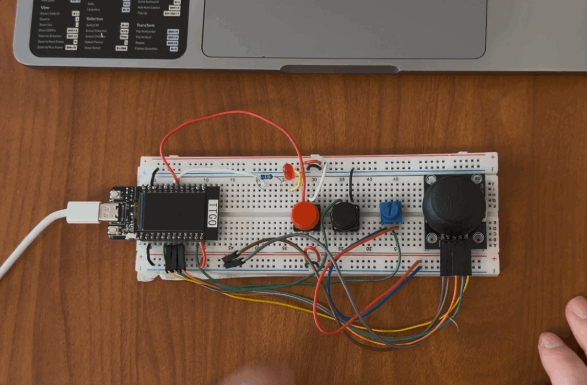
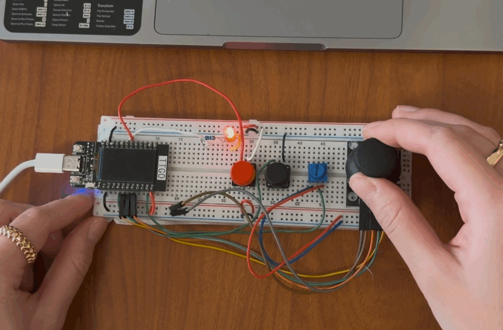
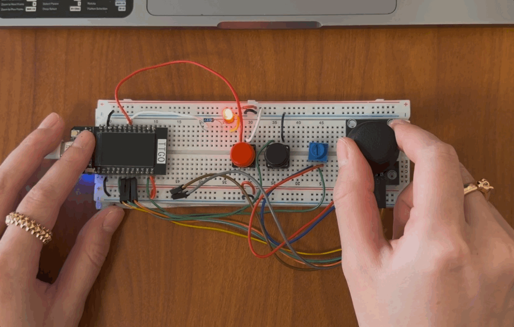
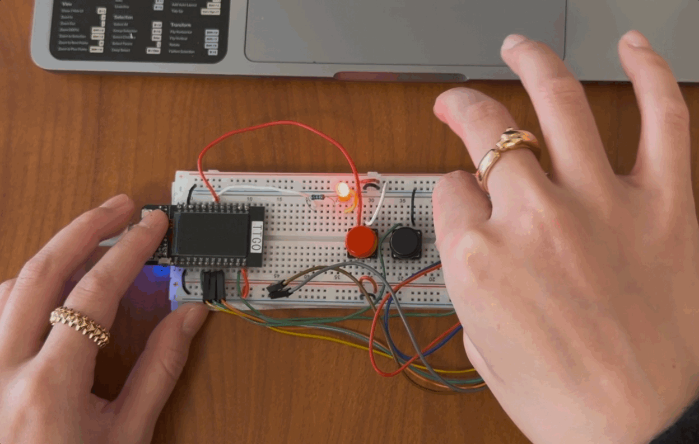

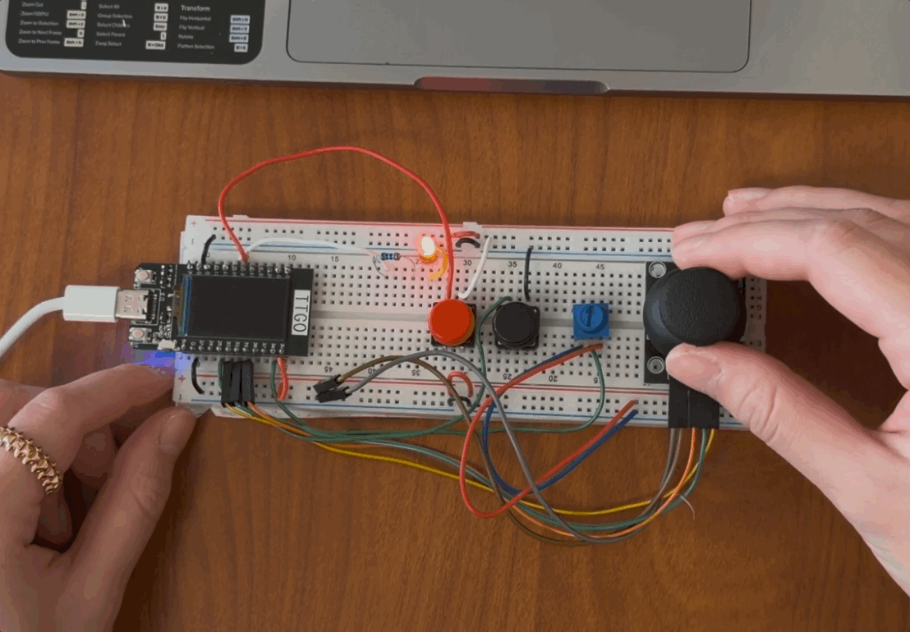
Sound credits:
Daft Punk, Panda Bear - Doin' It Right (feat. Panda Bear)
SOPHIE - EEEHHH/Nothing More To Say
Underworld - Born Slippy (Nuxx)